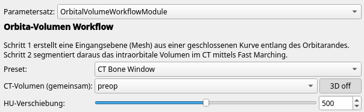
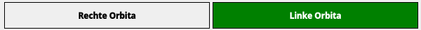
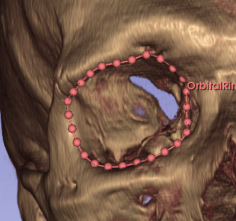

Orbital Volume Workflow
Modul: OrbitalVolumeWorkflowModule
Zweck: Segmentierung des intraorbitalen Volumens aus
CT-Datensätzen mittels Fast Marching
Zielgruppe: Klinisches Personal und Forscher im
Bereich der Orbitachirurgie
Voraussetzungen
- 3D Slicer (Version 5.0 oder neuer)
- CT-Datensatz in HU-kalibrierten Einheiten (DICOM oder NIfTI)
- Das Modul OrbitalVolumeWorkflowModule muss über den Extension Manager oder manuell geladen sein
Überblick
Das Modul besteht aus zwei Schritten:
| Schritt | Aufgabe |
|---|---|
| Schritt 1 | Zeichnen einer geschlossenen Kurve entlang des Orbitarandes → Erstellung eines Eintrittsebenenmeshes |
| Schritt 2 | Segmentierung des intraorbitalen Volumens mittels Fast-Marching-Algorithmus |
Die Bearbeitung erfolgt seitengetrennt (linke / rechte Orbita).
Schritt 0: Vorbereitung
- CT-Datensatz in Slicer laden (Datei → Daten hinzufügen oder DICOM-Browser).
- Das Modul OrbitalVolumeWorkflowModule öffnen.
- Optional: Im Dropdown Preset einen Parametersatz auswählen (siehe unten). Das Modul startet mit dem Preset CT Bone Window.
- Im Feld CT Volume den geladenen CT-Datensatz auswählen.

- Optional: Mit dem Schieberegler HU Shift und dem Button 3D on eine Volume-Rendering-Ansicht zur Orientierung aktivieren.
Preset-Auswahl
Das Modul bietet vordefinierte Parametersätze, die HU-Fenster, Stopping Value und Speed Sigma in einem Schritt setzen:
| Preset | HU Min | HU Max | Stopping Value | Speed Sigma | Verwendung |
|---|---|---|---|---|---|
| CT Bone Window | −200 | 300 | 25 mm | 70 HU | Standardmäßiges diagnostisches CT |
| Intraoperative CBCT | −300 | 500 | 20 mm | 120 HU | Intraoperatives Cone-Beam-CT (höheres Rauschen, breiteres Intensitätsfenster) |
| Manual | – | – | – | – | Individuelle Einstellung ohne Überschreiben |
Beim Auswählen eines Presets erscheint eine Bestätigungsabfrage,
bevor die Werte überschrieben werden.
Sobald ein beliebiger Wert nachträglich manuell geändert wird,
schaltet das Dropdown automatisch auf Manual.
Schritt 1: Orbitarand-Kurve und Eintrittsebene
1.1 Seite auswählen
Wählen Sie zunächst die zu bearbeitende Seite durch Klick auf
Right Orbit oder Left Orbit.
Die aktive Seite wird grün hervorgehoben.

1.2 Geschlossene Kurve zeichnen
- Klicken Sie auf New Curve, um eine neue
geschlossene Kurve anzulegen.
Slicer wechselt automatisch in den Platzierungsmodus. - Setzen Sie Kontrollpunkte entlang des Orbitarandes in der axialen
oder koronaren Schichtansicht.
Achten Sie darauf, den knöchernen Orbitarand vollständig zu umfahren. - Schließen Sie die Kurve, indem Sie auf den ersten Punkt klicken oder den Platzierungsmodus beenden.

Einstellungen (optional):
| Parameter | Bedeutung | Standardwert |
|---|---|---|
| Subdivision Distance (mm) | Abstand zwischen generierten Messpunkten auf dem Mesh | 1,0 mm |
| Smooth Iterations | Anzahl der Glättungsdurchläufe für das Mesh | 5 |
1.3 Eintrittsebene erstellen
Klicken Sie auf Create Surface.
Das Modul berechnet aus der Kurve ein planares Mesh (Orbital Plane),
das als anteriore Begrenzung der späteren Segmentierung dient.
Screenshot-Platzhalter:
[Screenshot: Erstelltes Orbital-Plane-Mesh in der 3D-Ansicht]
Das Ergebnis (Anzahl Dreiecke und Punkte) wird im Modul
angezeigt.
Wiederholen Sie Schritt 1 für die Gegenseite.
Schritt 2: Segmentierung des intraorbitalen Volumens
Wechseln Sie in Schritt 2 (Tab Step 2: Segmentation).
2.1 Orbital Plane auswählen
Wählen Sie im Feld Orbital Plane (Mesh) das in Schritt 1 erstellte Mesh der aktiven Seite aus.
2.2 HU-Fenster einstellen
| Parameter | Bedeutung | Standardwert |
|---|---|---|
| HU Min | Untergrenze des Gewebetyps für den Seed-Punkt | −200 HU |
| HU Max | Obergrenze des Gewebetyps für den Seed-Punkt | +300 HU |
Das HU-Fenster begrenzt, in welchem Gewebetyp der automatische
Seed-Punkt gesucht wird (typisch: Weichgewebe / Fettgewebe der
Orbita).
Die Werte können schnell über das Preset-Dropdown
(Schritt 0) gesetzt werden.
2.3 Seed-Einstellungen
Modus auswählen
Das Modul bietet drei Seed-Modi:
| Modus | Beschreibung |
|---|---|
| Manuell | Ein einzelner Seed-Punkt auf der Orbitalachse |
| Gegenseite spiegeln | Die bereits segmentierte Gegenseite wird gespiegelt und als Startregion verwendet. Erfordert eine abgeschlossene Segmentierung der anderen Seite. |
| Modellbasiert | Ein extern geladenes Template-Volumen wird als Startregion positioniert |
Screenshot-Platzhalter:
[Screenshot: Seed-Modus Radiobuttons – Gegenseite gespiegelt ausgewählt]
Manueller Modus
- Auto Seed: Aktiviert → Seed-Punkt wird
automatisch auf der Orbitalachse platziert
- Seed Offset (mm): Abstand des automatischen Seed-Punktes vom Orbitarand-Zentrum (positiv = posterior)
Modus „Gegenseite spiegeln”
Voraussetzung: Die Gegenseite muss bereits segmentiert worden
sein.
Der Algorithmus spiegelt das Gegenseiten-Volumen und zeigt es als
blaue Vorschau an. Die gespiegelte Region wird direkt als
Fast-Marching-Startregion verwendet.
Screenshot-Platzhalter:
[Screenshot: Blaue (gespiegelt) Vorschau-Segmentierung in der 3D-Ansicht]
Modellbasierter Modus
- Klicken Sie auf Load from file…, um ein Template-Segmentierungsvolumen (.seg.nrrd, .nii.gz etc.) zu laden.
- Wählen Sie das Template im Dropdown Template segmentation aus.
- Optional: Klicken Sie auf Mirror, um das Template an der Mediansagittalebene zu spiegeln (z. B. wenn ein Rechts-Template für die linke Seite genutzt werden soll).
- Klicken Sie auf Position Model.
Das Template wird automatisch am Orbitarand-Zentrum positioniert (mit 20 mm posterioarem Versatz).
In den 2D-Schichtansichten erscheinen Interaction-Handles zur manuellen Feinjustierung per Translation, Rotation und Skalierung.
Screenshot-Platzhalter:
[Screenshot: Positioniertes Template in der sagittalen Schichtansicht mit sichtbaren Interaction-Handles]
2.4 Posteriore Begrenzung (erforderlich)
Klicken Sie auf P neben dem Feld Orbital
Depth (mm), um einen Markup-Punkt zu setzen.
Platzieren Sie diesen an der posterioren Orbitawand (z. B. am Apex
orbitae in der sagittalen Ansicht).
Das Modul berechnet daraus automatisch die Tiefe der Orbita und trägt
den Wert in das Feld Orbital Depth (mm) ein.
Hinweis: Ohne gesetzten Cutoff-Punkt kann die Segmentierung nicht gestartet werden.
Screenshot-Platzhalter:
[Screenshot: Posteriorer Markup-Punkt in der sagittalen Ansicht, Orbita-Tiefe im Feld]
2.5 Fast-Marching-Parameter
| Parameter | Bedeutung | Empfohlener Wert |
|---|---|---|
| Orbital Depth (mm) | Maximale Tiefe der Ausbreitung entlang der Orbitalachse | 50–60 mm (individuell) |
| Radius Margin (mm) | Sicherheitspuffer um den Orbitarand | 5 mm |
| Stopping Value | Maximale Ankunftszeit der Fast-Marching-Welle (niedrig = konservativ) | 25 (manuell) / 15 (gespiegelt / Modell) |
| Speed Sigma (σ) | Sigma des Gradienten-Geschwindigkeitsfeldes (höher = weichere Grenzen) | 70 |
| Posterior Boost | Verstärkungsfaktor posterior der Eintrittsebene | 1,5 |
2.6 Nachbearbeitung: Satelliten entfernen
Aktivieren Sie Remove satellite regions, um nach der Segmentierung kleine isolierte Volumina (z. B. verbundene Ausläufer) automatisch zu entfernen.
| Parameter | Bedeutung | Standardwert |
|---|---|---|
| Min. Satellit-Ø (mm) | Maximaler Durchmesser, ab dem ein Satellit entfernt wird | 3,0 mm |
2.7 Segmentierung starten
Klicken Sie auf Segment Volume.
Während der Berechnung zeigt ein Fortschrittsdialog den aktuellen
Verarbeitungsschritt an (Fast Marching, Glättung, HU-Schwellenwert
etc.).
Nach Abschluss der automatischen Nachbearbeitung erscheint ein Dialog mit drei Optionen:
| Schaltfläche | Funktion |
|---|---|
| Finish Segmentation | Anteriore Kante wird anhand der Eintrittsebene beschnitten (empfohlen für Standardfälle) |
| Pick Island | Öffnet den Segment Editor zum manuellen Auswählen einer Insel, falls die Segmentierung aus mehreren Teilen besteht |
| Inspect | Schließt den Dialog ohne Cutoff – zum manuellen Prüfen vor dem Abschluss |
Das Ergebnis (Volumen in ml, Voxelanzahl, HU am Seed) wird im Modul
angezeigt.
Die Schichtansichten zeigen automatisch das segmentierte CT als
Hintergrund.
Screenshot-Platzhalter:
[Screenshot: Abgeschlossene Segmentierung in axialer und koronarer Ansicht, Ergebnis-Label sichtbar]
2.8 Nachbearbeitung nach der Segmentierung
Nach der Segmentierung stehen zwei Schaltflächen zur manuellen Nachbearbeitung bereit:
| Schaltfläche | Funktion |
|---|---|
| Pick Island | Öffnet den Segment Editor und wartet auf die Auswahl einer Insel in einer Schichtansicht. Die ausgewählte Insel wird behalten, alle anderen Teile des Segments werden entfernt. |
| Perform Cutoff | Beschneidet das Segment anterior anhand der Eintrittsebene (entspricht „Finish Segmentation” im Dialog). Sinnvoll, wenn bei Inspect zunächst keine automatische Beschneidung erfolgt ist. |
Diese Funktionen wirken auf die Segmentierung der aktuell aktiven Seite.
Segmentierungs-Node manuell zuweisen
Unterhalb der Schaltflächen Segment Volume /
Clear befindet sich das Dropdown
Segmentation:.
Hier kann ein bereits in der Szene vorhandener
vtkMRMLSegmentationNode der aktiven Seite manuell
zugewiesen werden.
Bei Auswahl eines Nodes wird das Volumen des Segments
„IntraorbitalVolume” sofort berechnet und angezeigt.
Die Auswahl „(none)“ hebt die Zuweisung auf.
Anwendungsfall: Wenn eine Segmentierung extern erstellt oder aus einer anderen Sitzung geladen wurde und dem Workflow-Parameter-Set zugeordnet werden soll.
2.9 Manuelle Nachbearbeitung (optional)
Klicken Sie auf Edit in Segment Editor (Scissors),
um die Segmentierung manuell zu korrigieren.
Das Volumen wird nach der Bearbeitung automatisch neu berechnet.
2.10 Ergebnisse exportieren
Klicken Sie auf Export Results (Excel).
Das Modul speichert eine Datei
results_orbital_volume.xlsx im Verzeichnis des CT-Volumes
des aktiven Parameter-Sets.
Alle Parameter-Sets werden exportiert – nicht nur
das aktuell aktive.
Für jedes Parameter-Set mit mindestens einer abgeschlossenen
Segmentierung werden die entsprechenden Zeilen geschrieben.
Beim wiederholten Export werden vorhandene Zeilen der betreffenden
Parameter-Sets aktualisiert (nicht dupliziert).
Spalten der Excel-Tabelle:
| Spalte | Inhalt |
|---|---|
| Parameter-Node | Name des Parameter-Sets |
| CT-Volume | Name des CT-Datensatzes |
| Seite | Links / Rechts |
| Seed-Modus | Manuell / Gegenseite gespiegelt / Modellbasiert |
| HU Min / Max | Gewebefenster für den Seed |
| Stopping Value | Fast-Marching-Limit |
| Speed Sigma (σ) | Gradient-Sigma |
| Posteriorer Boost | Boost-Faktor |
| Satelliten entfernen | Ja / Nein |
| Min. Satelliten-Ø (mm) | Schwellwert Satellitenentfernung |
| Intraorbitalvolumen (ml) | Gemessenes Volumen |
| Gegenseite / Seite | Verhältnis der beiden Volumina (in %) |
Screenshot-Platzhalter:
[Screenshot: Excel-Datei mit exportierten Ergebnissen für zwei Seiten]
Tipps und Hinweise
- Reihenfolge: Beginnen Sie stets mit der weniger stark betroffenen / leichter zu segmentierenden Seite, da diese dann als Vorlage für die Gegenseiten-Spiegelung dienen kann.
- Preset: Verwenden Sie CT Bone Window für diagnostische CTs und Intraoperative CBCT für intraoperative Aufnahmen als Ausgangspunkt. Die Feinabstimmung erfolgt über die einzelnen Parameter – das Dropdown wechselt dabei automatisch auf Manual.
- HU-Fenster: Bei stark eingebluteten Orbitas ggf. HU Max auf 60–80 reduzieren, um Hämatome auszuschließen.
- Stopping Value: Bei Grenzüberschreitungen in den Nasennebenhöhlen den Wert reduzieren (z. B. von 25 auf 12).
- Parameter-Sets: Für jeden Patienten empfiehlt sich ein eigenes Parameter-Set (im Dropdown oben mit „+” erstellen), um die Einstellungen dauerhaft zu speichern. Der Export erfasst automatisch alle vorhandenen Parameter-Sets.
- Export: Da der Export alle Parameter-Sets einer Sitzung in dieselbe Datei schreibt, empfiehlt es sich, die Datei nach Abschluss aller Fälle umzubenennen oder an einen Zielordner zu verschieben.
Fehlersuche
| Problem | Mögliche Ursache | Lösung |
|---|---|---|
| Segmentierung läuft in die Nasennebenhöhlen | Stopping Value zu hoch oder Eintrittsebenen-Mesh nicht korrekt geschlossen | Stopping Value auf 12–15 reduzieren; Orbital-Plane-Mesh prüfen |
| Sehr kleines Segment bei Modell-Modus | Skalierung zu stark oder Modell außerhalb CT | Position Model erneut klicken, Template prüfen |
| Kein Ergebnis nach Export | CT-Volume des aktiven Parameter-Sets hat keinen Dateipfad | CT-Datei auf Festplatte speichern oder Ausgabeverzeichnis manuell wählen |
| Export enthält nicht alle Fälle | Weitere Fälle sind in anderen Parameter-Sets | Sicherstellen, dass alle Parameter-Sets das Attribut „ModuleName” tragen (wird beim Erstellen im Modul automatisch gesetzt) |
| Schwarze Darstellung nach Mirror | Tritt nicht mehr auf (Normalen werden automatisch korrigiert) | – |